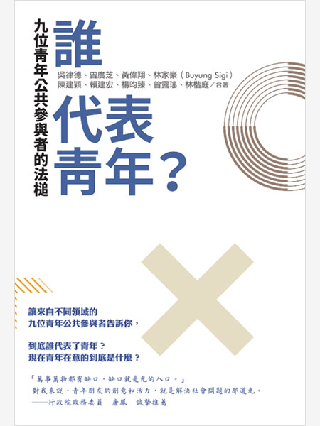

和平、正義及健全制度
促進和平多元的社會，確保司法平等，建立具公信力且廣納民意的體系
居住正義夢碎！全台29萬空屋賣不完、建商仍瘋狂蓋房......房價只漲不跌的3大理由
詳全文多元夥伴關係
建立多元夥伴關係，協力促進永續願景
促進和平多元的社會，確保司法平等，建立具公信力且廣納民意的體系
建立多元夥伴關係，協力促進永續願景
年輕人為何憤怒：暴力組織的危險誘惑以及我們能做什麼
誰代表青年？九位青年公共參與者的法槌
數位時代的人權思辨：回溯歷史關鍵，探尋人類與未來科技發展之道
黎明前的半島記憶：韓國人權與民主紀行
臺灣之春：解嚴前的臺灣民主運動
突尼西亞：阿拉伯世界的民主曙光
被搶劫的人生：蘇炳坤從冤枉到無罪的三十年長路

大審判家弗里茲・鮑爾：看檢察總長如何翻轉德國的歷史
異見的自由：美國憲法增修條文第一條與言論自由的保障
徹底圖解世界各國政治制度：一次搞懂5大洲23個國家，一手掌握全球動向
立委很忙的
「野蠻」的復權：臺灣原住民族的轉型正義與現代法秩序的自我救贖
課綱中的世界史：從全球化、文化交流，到現代性的反思，縱觀世界的形成與展望
意外的和平：雷根、戈巴契夫等「四巨頭」，如何攜手結束半世紀的冷戰對峙？
經濟，不是市場說了算：邁向幸福經濟共同體的倫理行動指南
什麼是世界公民主義？
區域經濟整合的趨勢
AI未來賽局：中美競合框架下，科技9巨頭建構的未來
臺灣政治經濟學：如何面對全球化在中美海陸爭霸的衝擊？
全球化的裂解與再融合：中國模式與西方模式誰將勝出？（增訂版）
尋找台灣味：東南亞╳台灣兩地的農業記事
大崩潰：一次看懂美中台戰略三角
餐桌上的紅色經濟風暴：黑心、暴利、壟斷，從一顆番茄看市場全球化的跨國商機與運作陰謀

當債券連結國家命運：從債券投資原理看懂全球財經大事件